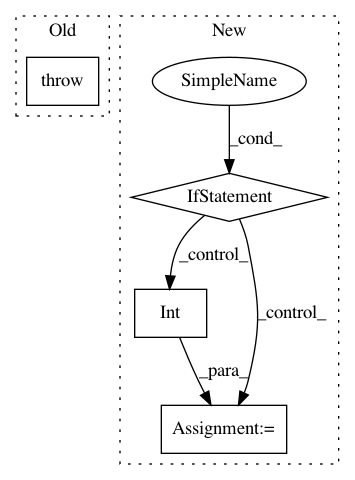

e839626c28d8dc6030ce71f3619e934b36fb6627,catalyst/metrics/functional.py,,process_multiclass_components,#,33
Before Change
if targets.max() != len(torch.unique(targets)) - 1:
if raise_class_labels_mismatch:
raise Exception(
"`targets` maximum does not represent number of classes"
)
// mapping classes
outputs, targets = map_labels_to_classes(outputs, targets)
return outputs, targets
After Change
targets = torch.from_numpy(targets)
// @TODO: move to process_multiclass_components ?
if outputs.dim() == targets.dim() + 1:
// looks like we have scores/probabilities in our outputs
// let"s convert them to final model predictions
num_classes = max(
outputs.shape[argmax_dim], int(targets.max().detach().item() + 1)
)
outputs = torch.argmax(outputs, dim=argmax_dim)
if num_classes is None:
// as far as we expect the outputs/targets tensors to be int64
// we could find number of classes as max available number
num_classes = max(
In pattern: SUPERPATTERN
Frequency: 3
Non-data size: 4
Instances
Project Name: Scitator/catalyst
Commit Name: e839626c28d8dc6030ce71f3619e934b36fb6627
Time: 2020-10-23
Author: Balaganskij.NN@phystech.edu
File Name: catalyst/metrics/functional.py
Class Name:
Method Name: process_multiclass_components
Project Name: librosa/librosa
Commit Name: 7ca0da3854c49f73bd2aae5592f1cf5a9f7177d4
Time: 2014-11-06
Author: brian.mcfee@nyu.edu
File Name: librosa/core.py
Class Name:
Method Name: note_to_midi
Project Name: khaotik/DaNet-Tensorflow
Commit Name: de00082780be884fc90e0113d323bfd63006ffba
Time: 2017-08-07
Author: junkkhaotik@gmail.com
File Name: main.py
Class Name:
Method Name: load_wavfile